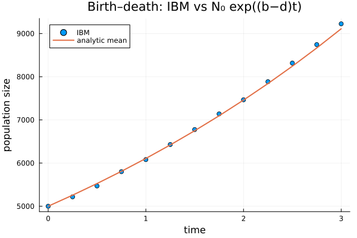
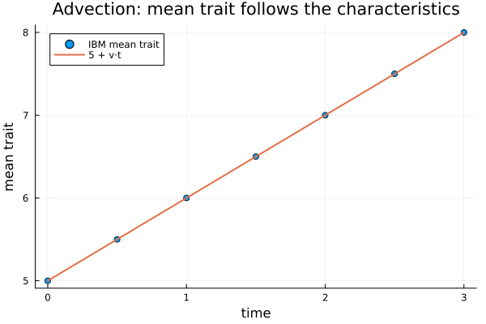
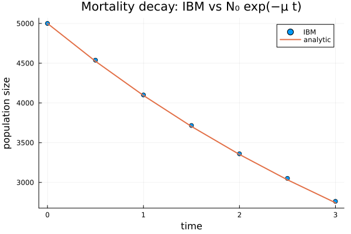
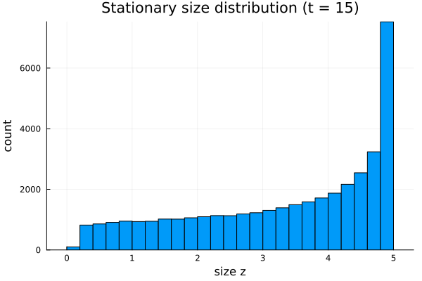
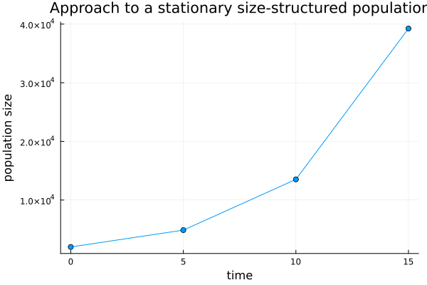

Continuous-time dynamics (measure-valued PDMP)
In continuous time, an individual's trait flows deterministically by a growth velocity $v(z)$ between random birth and death events — a measure-valued piecewise-deterministic Markov process (PDMP). Its mean obeys the physiologically-structured population model (PSPM) transport equation,
\[\frac{\partial n}{\partial t} = -\frac{\partial}{\partial z}\big(v(z)\,n\big) - \mu(z)\,n + \text{births},\]
so this is the individual-level dual of the deterministic transport backend. An operator split (flow then jumps) over small steps handles it — no dedicated PDMP solver needed.
The continuous-time IBM is parameterized by per-individual rate functions of the trait: flow(x), mortality(x), fecundity(x), and recruit(rng).
Birth–death dynamics
With no flow, constant birth rate $b$ and death rate $d$, the mean grows as $N_0 e^{(b-d)t}$:
using IndividualBasedPopulationDynamics
using StructuredPopulationCore: ContinuousDomain
using Random, Statistics, Plots
b, d = 0.6, 0.4
dom = ContinuousDomain(0.0, 10.0, 50)
world = ibm_world_ct(x -> 0.0, x -> d, x -> b, rng -> 2.0, dom;
rng = Random.Xoshiro(11), traits0 = fill(2.0, 5000))
res = ibm_run_ct!(world, (0.0, 3.0); dt = 0.01, saveat = 0.25)
plot(res.t, res.N; seriestype = :scatter, label = "IBM",
xlabel = "time", ylabel = "population size",
title = "Birth–death: IBM vs N₀ exp((b−d)t)")
plot!(res.t, 5000 .* exp.((b - d) .* res.t); lw = 2, label = "analytic mean")
Advection and mortality
Individuals flowing at constant velocity $v$ and dying at rate $\mu$, with no births: the population decays by mortality while the trait distribution advects rigidly, its mean following the characteristics $\bar z(t) = \bar z(0) + v t$:
v, mu = 1.0, 0.2
dom2 = ContinuousDomain(0.0, 50.0, 100)
world2 = ibm_world_ct(x -> v, x -> mu, x -> 0.0, rng -> 0.0, dom2;
rng = Random.Xoshiro(22), traits0 = fill(5.0, 5000))
res2 = ibm_run_ct!(world2, (0.0, 3.0); dt = 0.01, saveat = 0.5, save_traits = true)
mean_traits = [mean(tr) for tr in res2.traits]
plot(res2.t, mean_traits; seriestype = :scatter, label = "IBM mean trait",
xlabel = "time", ylabel = "mean trait",
title = "Advection: mean trait follows the characteristics")
plot!(res2.t, 5.0 .+ v .* res2.t; lw = 2, label = "5 + v·t")
plot(res2.t, res2.N; seriestype = :scatter, label = "IBM",
xlabel = "time", ylabel = "population size",
title = "Mortality decay: IBM vs N₀ exp(−μ t)")
plot!(res2.t, 5000 .* exp.(-mu .* res2.t); lw = 2, label = "analytic")
A size-structured example
Combining growth, death, and reproduction: individuals grow toward a maximum size, die at a constant rate, and large individuals reproduce (offspring entering near a fixed birth size) — the classic physiologically-structured IBM:
dom3 = ContinuousDomain(0.0, 5.0, 100)
flow(x) = 0.6 * (5.0 - x) # von Bertalanffy-like growth
mortality(x) = 0.1
fecundity(x) = x > 2.0 ? 0.4 : 0.0 # only large individuals reproduce
recruit(rng) = 0.2 + 0.05 * randn(rng) # offspring near size 0.2
world3 = ibm_world_ct(flow, mortality, fecundity, recruit, dom3;
rng = Random.Xoshiro(5), traits0 = fill(0.5, 2000))
res3 = ibm_run_ct!(world3, (0.0, 15.0); dt = 0.01, saveat = 5.0, save_traits = true)
histogram(res3.traits[end]; bins = 0:0.2:5, legend = false,
xlabel = "size z", ylabel = "count",
title = "Stationary size distribution (t = 15)")
plot(res3.t, res3.N; marker = :circle, legend = false,
xlabel = "time", ylabel = "population size",
title = "Approach to a stationary size-structured population")